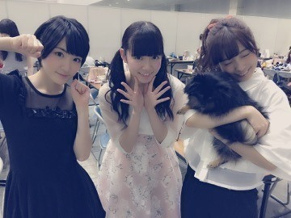
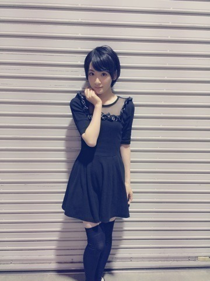

| 2015/05 05 Tue | 握手会ウィークv(*・ ∀・*) |
5月2日、3日とパシフィコ横浜にて、
全国握手会、個別握手会がありました〜ヽ(・∀・)ノ
来てくださった皆さんありがとうございました！！
全国握手会は過去最高人数のファンの皆さんが来てくださったという事で、毎回来てくださる方、初めて来てくださる方、本当に感謝しています！！
真夏の全国ツアー2015
12枚目シングルの発売が7月22日
などなど嬉しいニュースがいっぱい発表されました〜

そして、2ndバースデーLIVEのDVDも発売されますので、是非皆さん2歳の乃木坂46のお誕生日をお祝いして下さいね〜！！！
全国握手会のペアは
ひめたんとゆったん！！

マネージャーさんが連れてきたわんこも一緒だよ

実は、生駒ちゃんのもう一個のニックネーム、
いこたんなんです。
だから何気たんたんたんレーンだったんですね〜(⁼̴̀ૢ꒳⁼̴́ૢ๑)
ひめきゅんさん、ふぁみたんの皆さんありがとうございました〜❤︎
もち、いこまふぁむのみんないつもありがとう〜ヽ(・∀・)ノ❤︎
個別握手会はone spoのワンピースを着ました！！

写ってないけど、靴はMILKの黒のヒールにサクランボがついてるやつ！！
暖かくなってきたから、またいっぱいワンピース着れるから嬉しい〜〜

世の中はGWらしいですが、、
皆さん、楽しいGWを過ごしていますか？
そんな今日はbayfm「ピーアーク presents bayfmフリマパラダイス」に出演してきました〜ヽ(・∀・)ノ
公開生放送で、LIVEもやってDJの野呂佳代さんもお久しぶりにお会いできて嬉しかったです〜❤︎❤︎
見に来てくださった皆さん！
楽しんで頂けましたか〜ヽ(・∀・)ノ
後ろの方にも生駒のパワーが届く様に全力でパフォーマンスしました！！
グルメも充実してましたね〜！
私はから揚げと牡蠣を食べました❤︎
最近は、短期間で様々な感情を経験しました。
寂しいを感じたと思ったら、次はトキメキを感じたり危機を感じたり。
乃木坂に入って、心の栄養を沢山もらっている気がします。
有難いですね。
こんな毎日を過ごせるのが

明日は名古屋で全国握手会！！
レーンはいこみなみだよ〜❤︎❤︎
みなみちゃん〜
楽しみにしてまーす

へばなっ☆彡
コメント(466)
2015/05/05 20:06